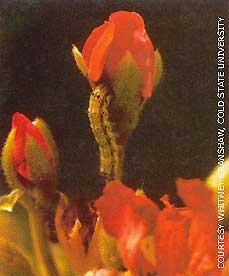

Researchers reporting in the journal Science have made a discovery that fur ther confirms warnings that pests can and will become resistant to genetically mod ified organisms. Scientists have found the first insect genes resistant to the bacterium Bacillus thuringiensis, the "Bt" in geneti cally modified crops made by agribusi ness giants (most notably Aventis' StarLink corn). Normally, Bt toxins attack pests' di gestive tracts, causing midgut cells to burst. But Clemson University researchers working on lab strains of tobacco bud worm found a small, "totally unexpected" change in the bugs' DNA had made the Bt toxins ineffective by preventing the toxins from latching onto the budworms' midgut.
The budworms aren't the first insects to show resistance to Bt. Some populations of diamondback moths are no longer affected by sprays organic farmers use on cabbage and related crops. British researchers are studying a roundworm that has also developed a similar resistance to Bt.
The budworm research is the first to find the actual gene responsible for the resistance. Although researchers say they can use the research to test for Bt-resis tant pests, tests won't stop the pests. Basic (un)natural selection takes over: Just one individual can produce several offspring with the resistant gene; those descendants can rapidly take over the population, since competition from nonresistant individuals is stopped when the nonresistants are killed by the Bt-modified crops. It's evolution at the speed of light: In a matter of a few years, pests could be totally resistant to Bt-modified crops, ending the genetically modified crops' "advantages" and putting growers right back where they started. dependent on the agribusiness giants.
|
 The tobacco budworm is one of several pests showing resistance to Bt. |
|
|